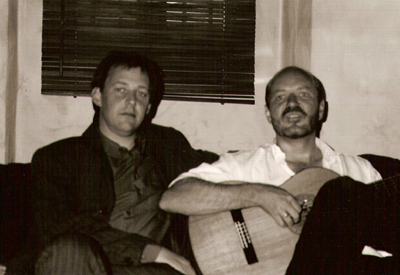
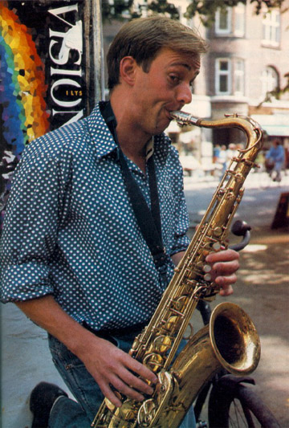
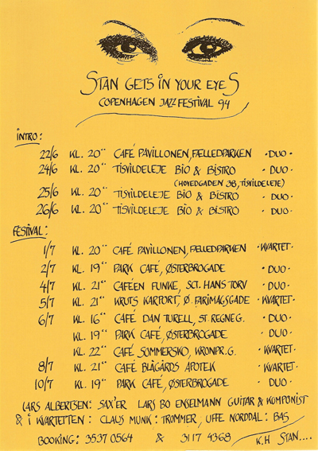
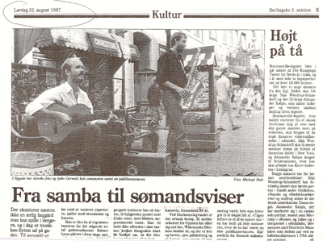
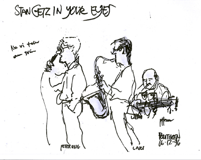
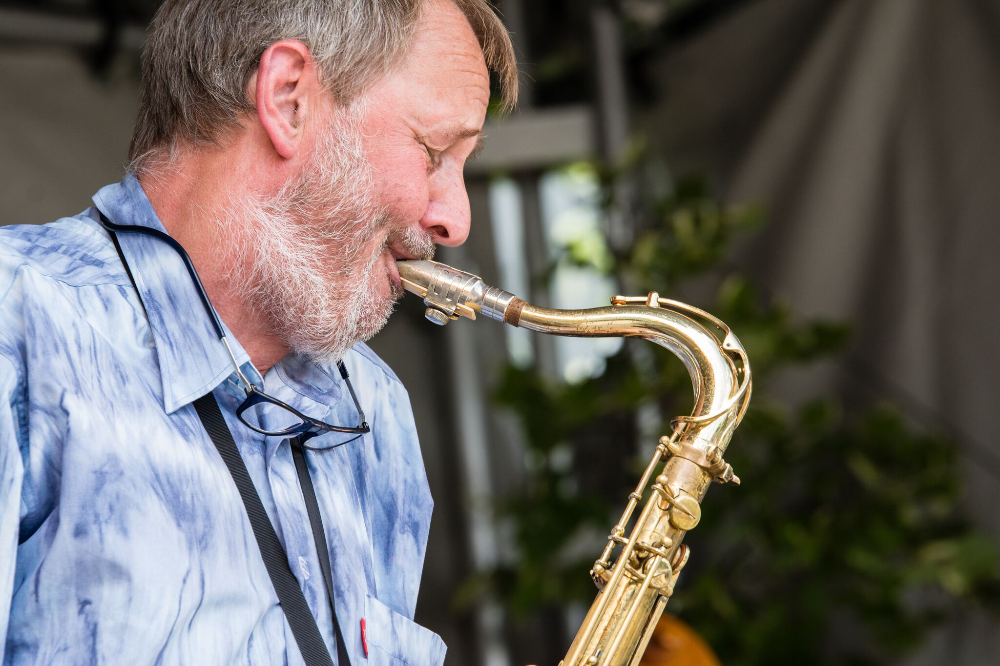
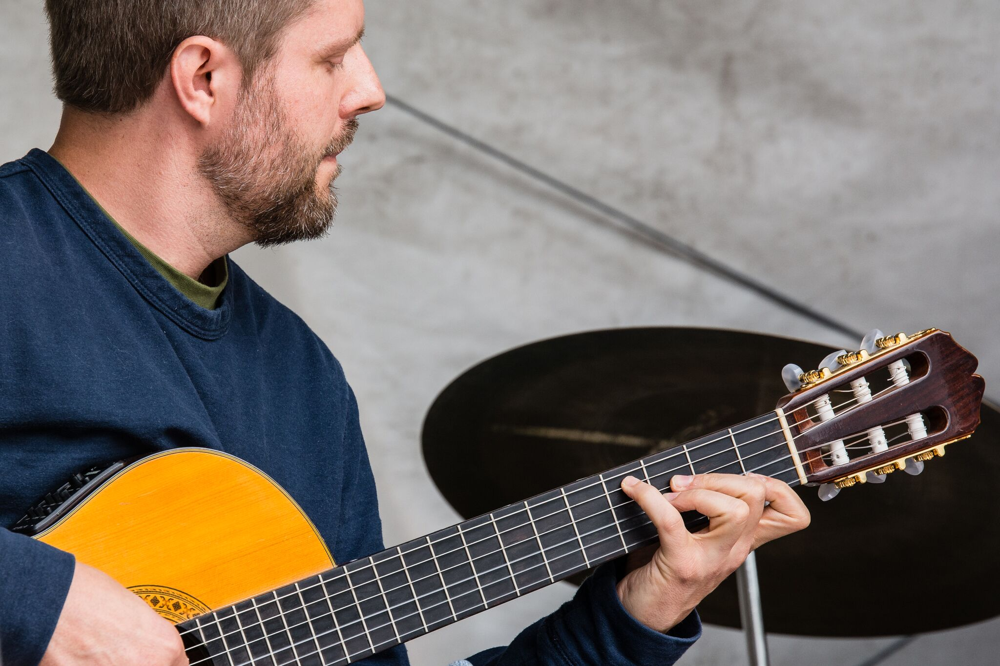
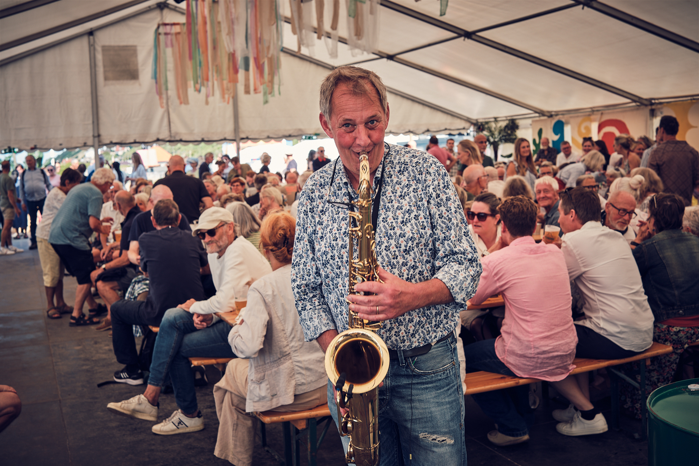
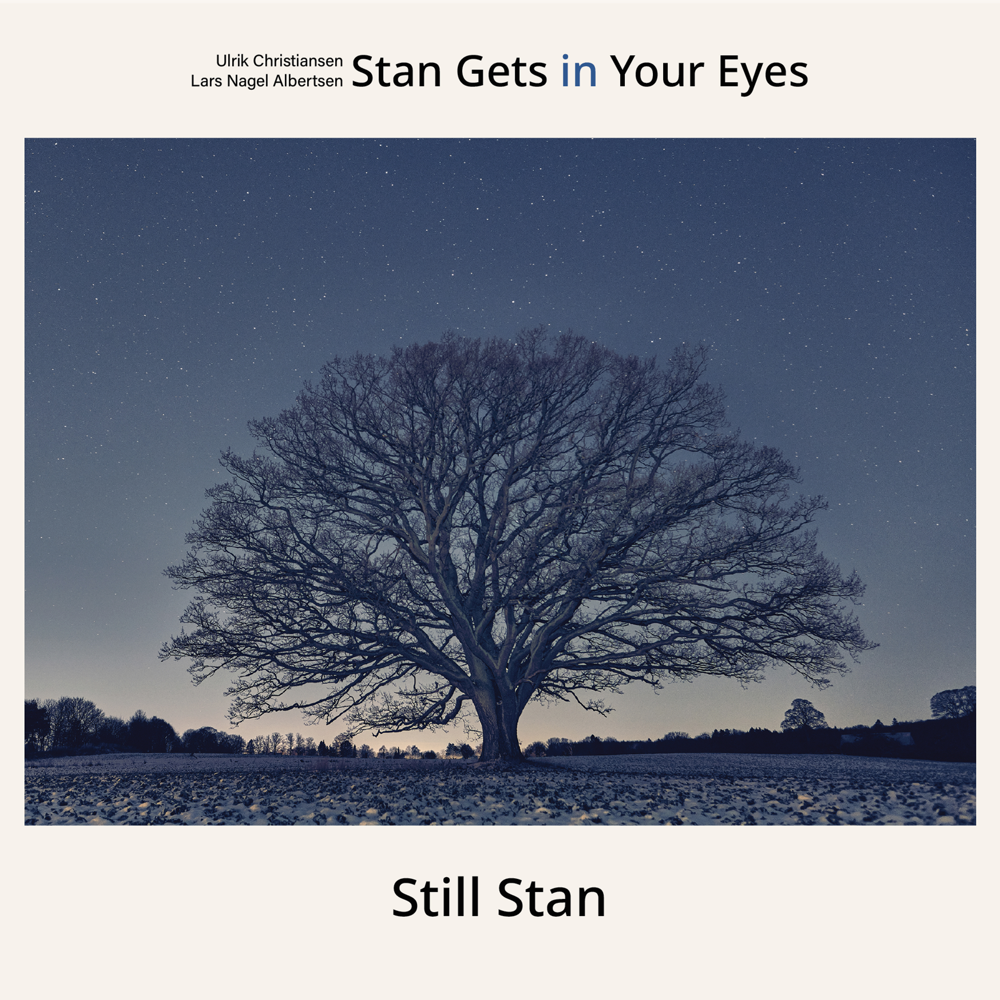

Historien
Dannet i forbindelse med Copenhagen Jazz Festival 1986 op til orkestrets første offentlige optræden på Caféen Funke, Sankt Hans Torv, København. Line-up var: Lars Bo Enselmann, akk. guitar, Michael Jørgensen, akk. guitar, Lars Albertsen, tenor sax og Christina Von Bulow, alto sax.
Navnet havde Christina fundet i det daværende undergrundsblad "København" under petit stoffet, hvor en sentens lød: Ugens melodi - Stan gets in your eyes! Vi andre havde ikke tænkt store tanker – heller ikke angående bandnavn mv. Men vi mente nok, at lejlighedsnavnet var dækkende for vores idé om en kvartet bestående af saxofoner og guitarer. En kvartet, der spillede udelukkende klassisk Bossa Nova. - Og så var navnet lidt gadedrengefrækt!

Og allerede i minutterne før debutkoncerten – dér bag scenetæppet på Nørrebrocaféen - var vi klar over, at navnet havde et vist potentiale: Det lille lokale var til lejligheden proppet med festklædte kvinder i lange kjoler og mænd i pæne jakkesæt, der i lige rækker sad helt op til scenekanten og med dæmpet stemmeføring svedte... og ventede!
-Uheldigvis på én, der aldrig kom: Men en slags Bossa Nova musik blev det da til!
Som det så tit sker, blev orkestret opløst efter debutkoncerten: Men Lars Bo Enselmann og jeg holdt sammen.




I årene, der fulgte, var Lars Bo som musiker – og senere som komponist - en stor inspiration og et forbillede for mig.
Vi spillede på gader og stræder i København, hvor jeg udviklede små, improviserede historier med udgangspunkt i musikken og temaet rettet mod den lille verden, der udgjorde vores - og vores publikums-ungdomsliv i København.
Vi blev snart inviteret ind i det spæde 80'er cafémiljø i København, hvor "Stan Gets in Your Eyes" var på plakaten med "øjnene" et utal af gange bla. på "Café Sommersko", "Krasnapolsky", "Kruts Karport", "Cafépavillionen" i Fælledparken, hos Hans på "Blaagårds Apotek" og ikke mindst på "Park Café" på Østerbrogade, hvor vi spillede de 96 job i de følgende 16 år.
Vi lavede også i perioden 1989-1993 to CDér: debut CDén ("Bossa"), som faktisk blev udsolgt fra forlaget, så vi måtte trykke ét oplag til. Og senere i 1993 endnu én ("Live at Park") med udgangspunkt i Lars Bo's fine kompositioner.







Efter nogle hektiske år med megen musik fik vi kærester, børn - og forpligtelser. Fuldtidsmusik blev henad vejen erstattet med fuldtidsjob.
I 2005 døde Lars Bo Enselmann tragisk i Rio de Janeiro, Brasilien. Jeg kendte Ulrik Christiansen i forvejen: Han havde fulgt Stan Gets in Your Eyes i tykt og tyndt i nogle år og havde også spillet med en aften i en fyldt Park Café. Ulrik som ny kompagnon i Stan var lige så oplagt som talentet.




For nogle år siden besluttede Ulrik og jeg, at det sidste kapitel i historien om Stan Gets in Your Eyes ikke var skrevet endnu! Nærværende album er resultatet af vore anstrengelser med at skrive endnu ét: Et kapitel, der på én gang trækker tråde tilbage til dengang i 80'erne, hvor Bossa Novaen piblede ud gennem cafédørene i Brokvartererne.
-Og samtidig rækker ud over tagene, gaderne og datidens små lejligheder i Ålborggade - mod horisonten! Som al improvisationskunst, hvor et helt livs erfaring er kogt ned til nuets formulering!
Vi har fået dejlig, hjertelig og kompetent hjælp af en række af Stan's musikalske venner gennem 30 år. Vi håber selvsagt, at "Still Stan" er i stand til at nå hjerter! – Og samtidig vise, at selv om vi måske ikke har rykket os meget fra vores udgangspunkt, kan vi godt alligevel været vokset med opgaven: - På samme måde som Ulriks træ fra en mark ved Hørsholm!
Tisvildeleje 1/4 2024
Lars Albertsen
Gammel musikvideo af Stan Gets In Your Eyes, "Corcovado" — optaget i København i midten af 90'erne.